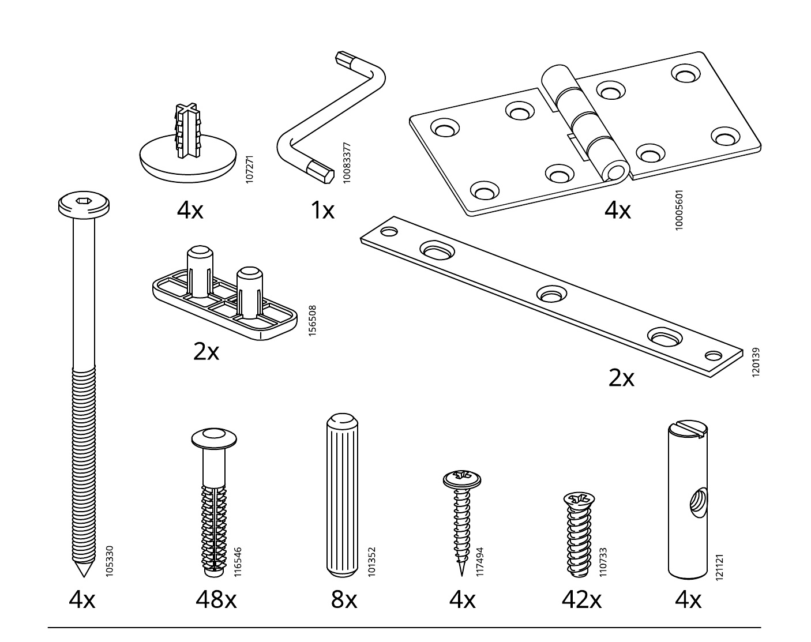
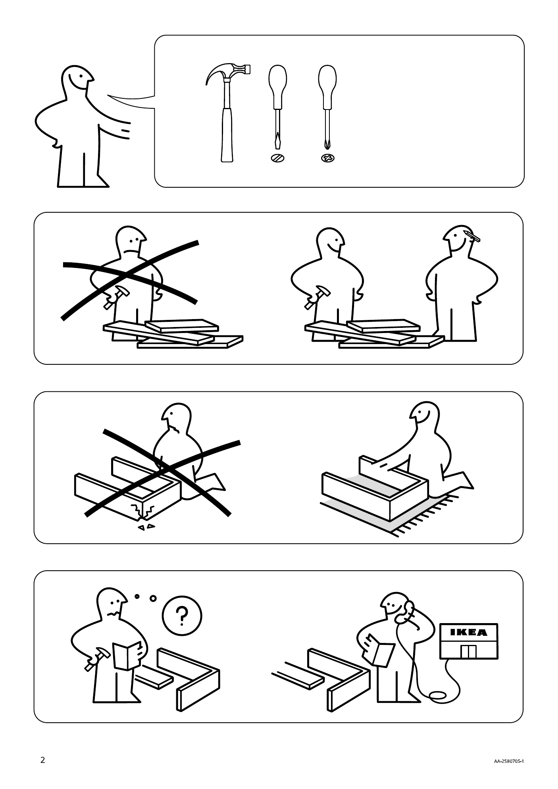

AA-2580705-1 · 12 页 · 11 步 · 6 个抽屉
NORDEN 组装助手
示意动画，比例为估算，孔位和方向以下方说明书原图为准。拖动画面可旋转，点一下可放大局部。连续播放时，抽屉只演示一次。
柜体靠墙的位置有踢脚线吗？
回答由 Claude 根据本步原图和说明生成，可能出错。关键位置请再看原图。
虚拟格子
请把零件按上面的位置摆在软垫或托盘上，不需要实体格子。大板件说明书没有编号，暂不在格子内。
局部放大
开工前清点
数量来自说明书第 4–6 页。螺丝和连接件已和各步用量逐项核对。勾选后保存在这台设备上。
| 到齐 | 编号 | 数量 | 袋 | 用在 |
|---|


开工前先看
说明书的图示建议两人组装。
- 工具：锤子、一字螺丝刀、十字螺丝刀。
- 在软垫上操作，避免桌面和木件损伤。
- 遇到问题，先看说明书或联系宜家。
- 放下桌板前，先确认支撑腿到位。
需要留意这份说明书没有文字警告，也没有墙面固定步骤。以上内容来自第 2 页和第 10 页的图示。
本工具不是宜家官方产品，也不能替代随货说明书。